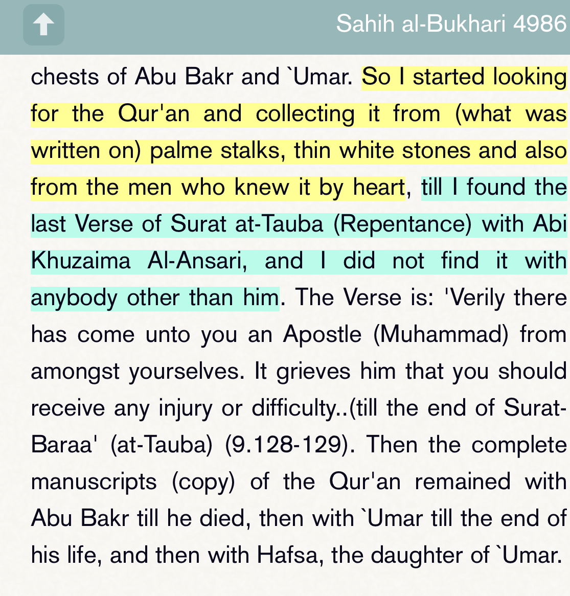
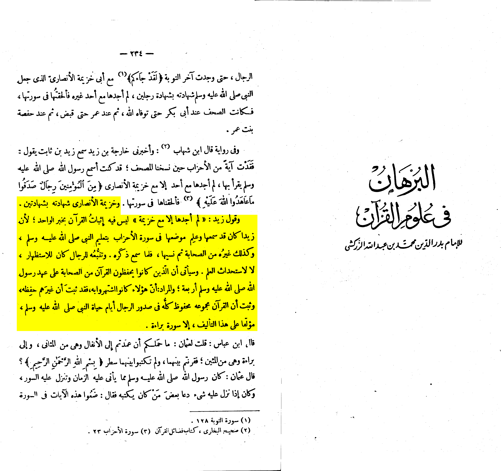
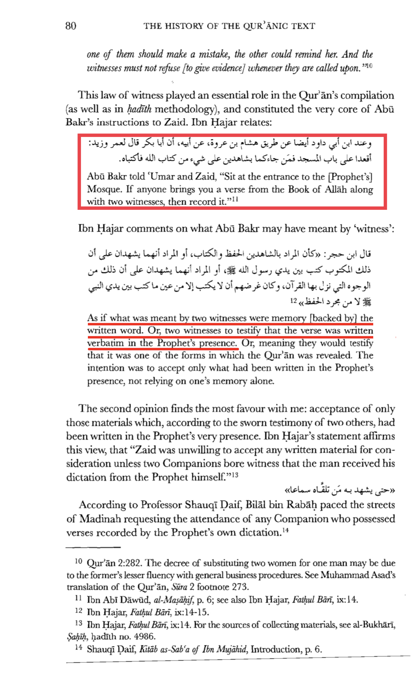
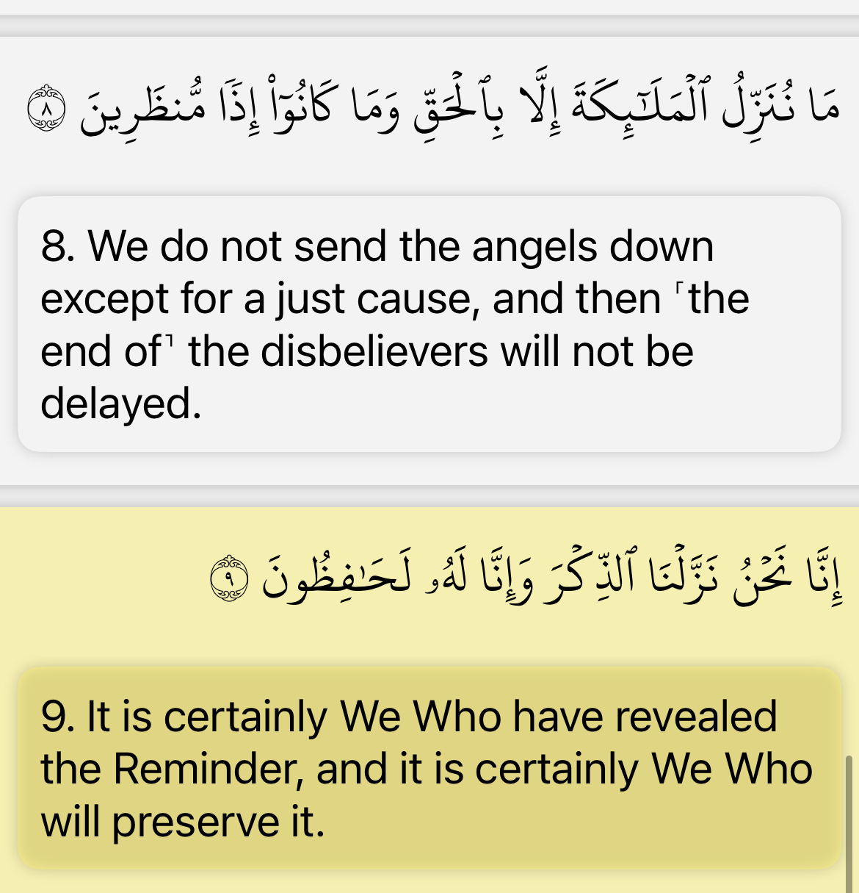
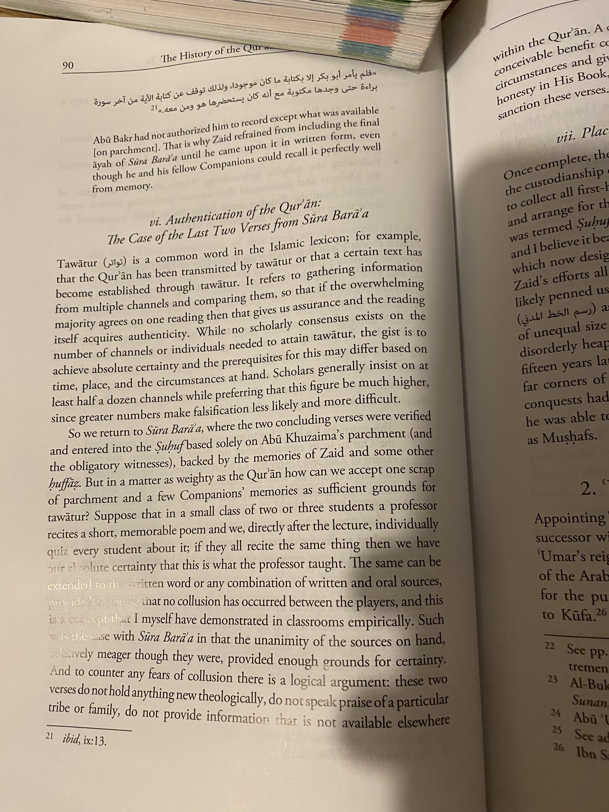

Some quranist [submiters] believe that surah Taubah last 2 verse [128-129] is satanic and not from the Kitab of Allah. Because it breaks the code 19 of these disbeliever. Dr Rasheed Khalifa [false prophet] convinced his people that this claim is true. Let’s refute it. 🔽
Mainly they deny it because it doenst agree with their code 19 and they use bukahri as evidence against the Sunnis.

The explanation to this is that:
the Qur'an was written in the era of the Prophet Muhammad (صلى الله عليه وسلم) but was not collected in book volume, rather it was separate, written on many materials. So when Imam Umar (عليه السلام) suggested to imam Abu Bakr (عليه السلام) that the Qur'an should be collected to complete Kitab. Then Abu Bakr ordered Zaid bin Thabit al-Ansari (عليه السلام) to do so.
when Abu Khuzaimah Said he had 2 verse it just meant that he was first person to have this in the complete book at the time. And this was also affirmed by those whom memorized it and allowed it. Such as Umar Uthman, Zaid and Uby bin K'ab (السلام عليهم) whom witnessed that they had heard it from the Prophet (صلى الله عليه وسلم) this means it wasn’t only 1 person who had it this 2 verse memorized but he was first person to put it in a complete book.

Some of the conditions that zaid put in order to take verse was.
- 2 eye witness
- Written in material
- Authorized by him or umar
- Hafiz who memorized it by heart

The main point is that he was first to have it in Kitab so this means he didn’t fabricate the 2 last verse because he had 2 witnesses and zaid also allowed it since he himself memorized the verses

But regardless god said that the Quran is going to be preserved now if that’s true then how came it was easy for a man to add few verses to the Kitab of god and no one disputed this matter for 1400 untill Rasheed khalifa in the 20th century? It make’s no sense for god to say it’s preserved but yet someone is adding verse to the Quran.

anyways this means that the Quran is preserved and the last 2 verse are from the Quran and anyone who disputes this matter is a kaffir, and Rasheed khalifa is a false prophet for denying this